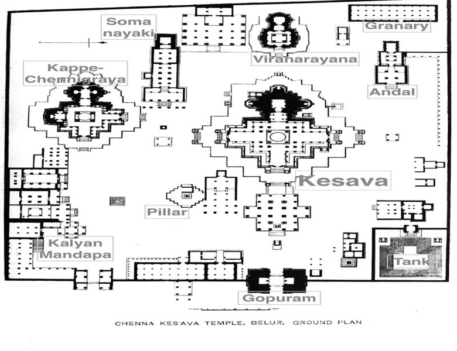

55555
5555
The Chennakeshava Temple, also referred to as Keshava, Kesava or Vijayanarayana Temple of Belur, is a 12th-century Hindu temple in the Hassan district of Karnataka state, India. It was commissioned by King Vishnuvardhana in 1117 CE, on the banks of the Yagachi River in Belur also called Velapura, an early Hoysala Empire capital. The temple was built over three generations and took 103 years to finish. It was repeatedly damaged and plundered during wars, repeatedly rebuilt and repaired over its history. It is 35 km from Hassan city and about 200 km from Bengaluru.
Chennakesava (lit, "handsome Kesava") is a form of the Hindu god Vishnu. The temple is dedicated to Vishnu and has been an active Hindu temple since its founding. It is reverentially described in medieval Hindu texts, and remains an important pilgrimage site in Vaishnavism. The temple is remarkable for its architecture, sculptures, reliefs, friezes as well its iconography, inscriptions and history. The temple artwork depicts scenes of secular life in the 12th century, dancers and musicians, as well as a pictorial narration of Hindu texts such as the Ramayana, the Mahabharata and the Puranas through numerous friezes. It is a Vaishnava temple that reverentially includes many themes from Shaivism and Shaktism, as well as images of a Jina from Jainism and the Buddha from Buddhism. The Chennakeshava temple is a testimony to the artistic, cultural and theological perspectives in 12th century South India and the Hoysala Empire rule.
Location of Chennakeshava temple
The Chennakeshava Temple is located in Belur taluk in Hassan district of the Indian state of Karnataka. It is about 35 kilometres (22 mi) northwest of Hassan.[2] The temple is about 16 kilometres (9.9 mi) from Halebidu temples. Belur has no nearby airport, and is about 200 kilometres (124 mi) west of Bengaluru (IATA Code: BLR), about 3.5 hours drive accessible with a four lane NH75 highway. Hassan is the closest city near Belur that is connected by railway network to major cities of Karnataka. The Chennakeshava Temple is an active Hindu temple and a major Vaishnava pilgrimage site. It is located on the banks of Yagachi River (also called Badari River in historic texts), a tributary of Hemavati River.[8]
History of Chennakeshava temple
The Hoysala period of South Indian history began about 1000 CE and continued through 1346 CE. In this period, they built around 1,500 temples in 958 centres. Belur is called Beluhur, Velur or Velapura in old inscriptions and medieval era texts. It was the early capital of the Hoysala kings. The city was so esteemed by the Hoysalas that it is referred to as "earthly Vaikuntha" (Vishnu's abode) and "dakshina Varanasi" (southern holy city of Hindus) in later inscriptions.
One of the Hoyasala kings was Vishnuvardhana, who came to power in 1110 CE. He commissioned the Chennakeshava temple dedicated to Vishnu in 1117 CE after an important military victory in 1116 CE. According to a later mythology, Vishnuvardhana built this temple to mark his conversion to Sri Vaishnavism after coming under the influence of Ramanuja, but states Shadakshari Settar, the historical records do not support this theory.
The Chennakeshava temple at Belur took 103 years to build. Vishnuvardhana moved his capital to Dvarasamudra (now called Halebidu), where he started the construction of the Hoysaleswara Temple dedicated to Shiva. Its construction continued till he died in 1140 CE. His legacy was continued by his descendants who completed the Hoysaleswara Temple in 1150 CE, and the Chennakesava Temple, Somanathapura in 1258 CE. The Hoysalas employed many noted architects and artisans who developed a new architectural tradition, which art critic Adam Hardy called the Karnata Dravida tradition.
The Hoysala Empire and its capital was invaded, plundered and destroyed in the early 14th century by Malik Kafur, a commander of the Delhi Sultanate ruler Alauddin Khalji. Belur and Halebidu became the target of plunder and destruction in 1326 CE by another Delhi Sultanate army. The territory was taken over by the Vijayanagara Empire. The Hoysala style, states James C. Harle, came to an end in the mid 14th century, when King Ballala II was killed in a war with the Muslim army led by Malik Kafur.
Chennakeshava Design?
The Chennakeshava complex at Belur consists of a 443.5 feet by 396 feet court with several Hindu temples and minor shrines inside a walled compound. The compound is entered from the east through a Gopuram added during the repairs of the Vijayanagar empire era. The temples and monuments found inside the walled complex are
* Chennakesava temple, also called as Kesava temple, is the main temple. It is in the middle of the complex, faces east, in front of the gopuram. Including the improvements added later, it is 178 feet by 156 feet. The temple stands on a wide platform terrace (jagati) about 3 feet high. The temple is dedicated to Vishnu in the form of Kesava.
* To the south of the Kesava temple is the Kappe Chennigaraya temple measuring 124 feet by 105 feet. It has two sanctums inside, one dedicated to Venugopala and the other to Chennigaraya (local popular name of Chennakeshava, Vishnu). The temple is called Kappe Chennigaraya because, according to a local legend, a Kappe (frog) was once found near its navel. This smaller temple was built by the queen concurrently with the main temple, and is believed to be similar smaller version.
* A stone slab with a couple standing side by side in a namaste posture under a canopy. The monument is damaged.
To the southwest of the Kesava temple is a small temple to Somyanayaki (form of the goddess Lakshmi), also dated to the 12th century. However, the temple was expanded and enhanced later. This temple is notable because the local tradition holds that its tower is miniature version of the major tower that once rose above the main Kesava temple.
The Andal temple, also called Ranganayaki shrine, is to the northwest of the Kesava temple. Its outer wall are decorated with artwork such as elephants and nature. It also displays 31 large images of deities from the Vaishnavism, Shaivism and Shaktism traditions of Hinduism. It also has intricately carved Venugopala, Mohini and Lakshmi, as well as friezes showing legends in the Puranas.
The complex has a number of small shrines. To the east of Kappe-Chennigaraya temple are shrines for Narasimha, Rama, Jiyar and Alvars of the Bhakti movement fame. To the east of Andal temple are shrines for Krishna, and Vaishnavism scholars Desikar, Bhashyakara and Ramanuja of Vishishtadvaita Vedanta fame. On the base of the shrines for Alvars are friezes showing stories from the Ramayana. Some of these shrines were added later because few of these scholars such as Desikar lived after the 12th century.
Two main sthambha (pillars) are found in the temple complex. The pillar facing the main temple, the Garuda (eagle) sthambha was erected in the Vijayanagar period while the pillar on the right, the Deepa sthambha (pillar with lamp) dates from the Hoysala period.Near the Viranarayana temple is a mandapa where annual procession ratha and temple vehicles have traditionally been stored. It is called vahana mandapa. The complex also has a kalyana-mandapa in the southeast corner for ceremonies. It was added in the 17th century.
A granary for storing food reserves is found in the northwest corner of the complex. There is smaller northern gate to the complex, near which is a pakasale or community kitchen built in the 13th century. A stepped water tank, called kalyani or Vasudeva-sarovara in inscriptions, is found in the northeast corner with two stone elephants on its side.
Sources
wikipedia
Author:--- wikipedia Editors
URL :--- https://en.wikipedia.org/wiki/Chennakeshava_Temple,_Belur